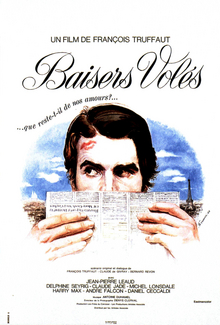

François Truffaut
1968
90 minutes
This is the third installment in Truffaut's tales of Antoine Doinel, played since childhood by Jean-Pierre Léaud. Here we get our first glimpse of Antoine Doinel as a grown-up, and he's still fucking up from the first scene, in which he is being discharged from the Army for being a poor soldier. We get to see him continue to fail, hilariously, at a series of jobs he's not particularly good at. He tries his hand at being a night clerk in a hotel, a detective, a stock boy in a shoe store (as part of his undercover detective work), a TV repairman, etc. There are some good running gags and much of it is very funny. We also get to see more of his woes with women and his poor decision making in that area as well. It's all silly and funny and occasionally a little sad, but it comes to a happy ending--at least until you recall he still has two more movies to get through.
As with a lot of Antoine Doinel stuff, this one reminds you a bit about stories from and about your father. Your dad also got discharged for not being a terribly motivated soldier and having some very messy things going on while he was trying. Thankfully he wrangled an honorable discharge out of it and never landed in a cell, unlike poor Antoine. He also infamously worked as a night clerk in a hotel, which turned out to be quite a sleazy endeavor which frustrated your mother. During that period he became friends with a rather skeezy cabbie who also worked the night shift (a job that you would end up doing someday) and a lot of business around the hotel seemed to cater to marital affairs and prostitution.
One of your father's scummier co-workers had a room near the hotel office that he was known for putting particularly attractive women in. He had drilled a hole in the wall so that he could spy on them when they got to their rooms. It's not known whether your father participated in this, but he certainly knew about it and found it horrifying and a bit funny.
For better or worse, hearing some of these stories from your father of his early work exploits drove home for you the fact that "you don't always have to do what everyone else does to make money". Sometimes a job is just a paycheck. Your dad later went on to be a company man, and after working there for awhile he became pretty loyal to that company, even following the job when they made him relocate around the country. In the end this loyalty did very little good and he got cheated out of the pension he had earned--which was another object lesson for you in your teen years. At a few points you even watched him suck it up during times he had extra debt or needed extra money and ended up getting part-time jobs pumping gas a couple of nights a week. He even took gigs as a quite-beloved Starbucks barista and an even more beloved crossing guard when your sister was a kid. None of these jobs defined him, and you were careful not to let any particular job you worked become your entire identity.
Your dad was also a student for a huge chunk of his life (thus needing some of the extra cash to pay for classes), and you were delighted when he first got his bachelor's degree and then went on and got his masters degree to become a counselor. This led to even more oddball gigs in his semi-retirement. Most notoriously, you liked to tell people your dad got hired for bank robbery gigs. As part of his counseling work, he had a contract with the county and/or state to go around to banks and other businesses after they had been robbed to talk to the employees and do an assessment to see who was in need of further counseling for potential PTSD after having a gun stuck in their face. He did a frightening amount of these--most such robberies do not make the news unless it's unavoidable. He couldn't directly tell you any of the stories about these--he was very scrupulous about this. But he was able to articulate the sheer range of human responses to this trauma. Many people took it in stride (at least at the time), some were shaken, some broke down and were a complete mess. He was sort of amazed how resilient people could be in the immediate aftermath of even a violent robbery, but he would note that even the ones who seemed fine might have it catch up with them later. It was a strange business, and you were happy to learn such lessons about other people long before you had to apply them to your own life.
Time to choose something different: